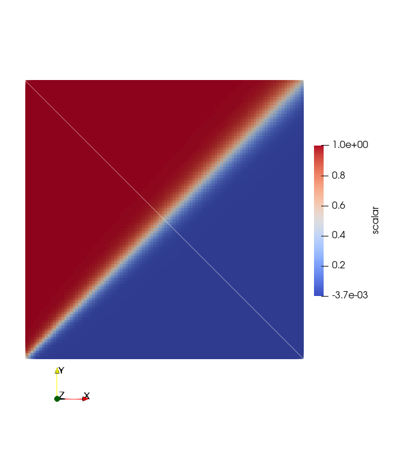
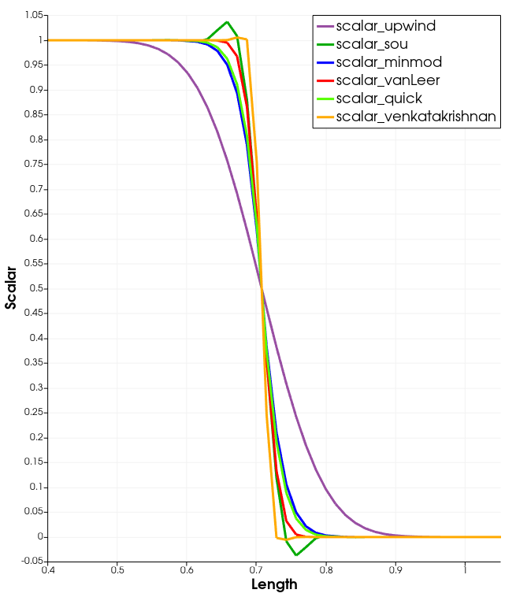

Limiters
Limiters, generally speaking, limit the slope when doing high-order (e.g. accuracy order greater than 1, e.g. non-constant polynomial) interpolations from finite volume cell centroids to faces. This limiting is done to avoid creating oscillations in the solution field in regions of steep gradients or discontinuities. Slope limiters, or flux limiters, are generally employed to make the solution Total Variation Diminishing (TVD). Borrowing notation from here, the Total Variation when space and time have been discretized can be defined as
where is the discretized approximate solution, denotes the time index, and . A numerical method is TVD if
Different formulations are used for compressible and incompressible/weakly-compressible flow.
Limiting Process for Compressible Flow
Borrowing notation from (Greenshields et al., 2010), we will now discuss computation of limited quantities, represented by where represents one side of a face, and represents the other side. To be clear about notation: the equations that follow will have a lot of and . When computing the top quantity (e.g. for ) we select the top quantities throughout the equation, e.g. we select for and for . Similarly, when computing bottom quantities we select the bottom quantities throughout the equation. We will also have a series of "ors" in the text. In general left of "or" will be for top quantities and right of "or" will be for bottom quantities.
Interpolation of limited quantities proceeds as follows:
where denotes the or cell centroid value of the interpolated quantity and
where represents a flux limiter function and
(1)
where is the norm of the distance from the face to the cell centroid and is the norm of the distance from the face to the cell centroid. Note that this definition of differs slightly from that given in (Greenshields et al., 2010) in which the denominator is given by , the norm of the distance between the and cell centroids. The definition given in Eq. (1) guarantees that . Note that for a non-skewed mesh the definition in Eq. (1) and (Greenshields et al., 2010) are the same.
The flux limiter function takes different forms as shown in Table 1. is computed as follows
where corresponds to the or cell centroid gradient and .
The following limiters are available in MOOSE. We have noted the convergence orders of each (when considering that the solution is smooth), whether they are TVD, and what the functional form of the flux limiting function is.
Table 1: Compressible Limiter Overview
| Limiter class name | Convergence Order | TVD | |
|---|---|---|---|
VanLeer | 2 | Yes | |
Upwind | 1 | Yes | 0 |
CentralDifference | 2 | No | 1 |
MinMod | 2 | Yes | |
SOU | 2 | No | |
QUICK | 2 | No |
Limiting Process for Incompressible and Weakly-Compressible flow
A full second-order upwind reconstruction is used for incompressible and weakly-compressible solvers. In this reconstruction, the limited quantity at the face is expressed as follows:
where:
is the value of the variable at the face
is the value of the variable at the cell
is the value of the gradient at the cell, which is computed with second-order methods (Green-Gauss without skewness correction and Least-Squares for skewness corrected)
is the distance vector from the face to the cell used in the interpolation
is the limiting function
Two kinds of limiters are supported: slope-limited and face-value limited. These limiters are defined below.
For slope-limiting, the approximate gradient ratio (or flux limiting ratio) is defined as follows:
where:
is the vector between the neighbor and current cell adjacent to the face
is the gradient of the variable at the face, which is computed by linear interpolation of second-order gradients at the adjacent cells to the face
For face-value limiting, the limiting function is defined as follows:
where:
is the increment at the face
is the maximum increment
is the minimum increment
The maximum and minimum variable values, and , respectively, are computed with a two-cell stencil. In this method, the maximum value is determined as the maximum cell value of the two faces adjacent to the face and their neighbors, respectively. Similarly, the minimum value is computed as the minimum cell value for these cells.
Each of the limiters implemented along with the implementation reference, limiting type, whether they are TVD, and the functional form of the flux limiting function is shown in Table 2.
Table 2: Incompressible/Weakly-Compressible Limiter Overview
| Limiter class name | Limiting Type | TVD | |
|---|---|---|---|
VanLeer (Harten, 1997) | Slope | Yes | |
MinMod (Harten, 1997) | Slope | Yes | |
QUICK (Harten, 1997) | Slope | Yes | |
SOU (Harten, 1997) | Face-Value | No | |
Venkatakrishnan (Venkatakrishnan, 1993) | Face-Value | No |
To illustrate the performance of the limiters, a dispersion analysis is developedand presented in Figure 1. This consists of the advection of a passive scalar in a Cartesian mesh at 45 degrees. The exact solution, without numerical diffusion, is a straight line at 45 degrees dividing the regions with a scalar concentration of 1 and 0.
In general, we recomment using VanLeer and MinMod limiters for most of the applications considering that they provide truly bounded solutions.

Figure 1: Dispersion problem, advection in a Cartesian mesh at 45 degrees.
The results and performance of each of the limiters are shown in Figure 2. This image provides an idea of the limiting action and results that can be expected for each of the limiters.

Figure 2: Performance of each of the limiters in a line perpendicular to the advection front.
References
- Christopher J Greenshields, Henry G Weller, Luca Gasparini, and Jason M Reese.
Implementation of semi-discrete, non-staggered central schemes in a colocated, polyhedral, finite volume framework, for high-speed viscous flows.
International journal for numerical methods in fluids, 63(1):1–21, 2010.[Export]
- Ami Harten.
High resolution schemes for hyperbolic conservation laws.
Journal of computational physics, 135(2):260–278, 1997.[Export]
- Venkat Venkatakrishnan.
On the accuracy of limiters and convergence to steady state solutions.
In 31st Aerospace Sciences Meeting, 880. 1993.[Export]